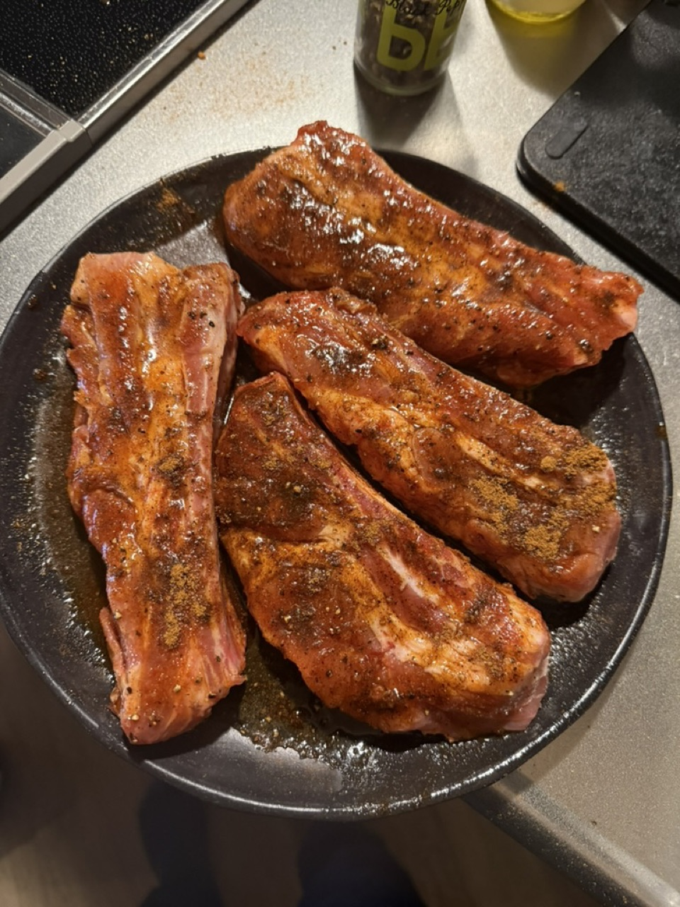

BBQラブの選び方。食材から逆算する5つの軸
ラブの棚の前で、「結局どれを買えばいいんだろう……」と固まってしまったこと、ありませんか？ 実はこれ、選ぶ順番が逆になっているだけなんです。ラブ選びでいちばん大事なのは「食材を主語にして逆算する」こと。何を焼くかを先に決めて、その食材がいちばん引き立つ風味のラブを、あとから選んであげる。SLOW FIRE がおすすめしているのは、牛・豚・鶏・魚介・野菜の5つの食材軸に沿ってラブを使い分ける考え方です。万能型ラブ1本で全部済ませる時代は、海外BBQの本格化とともに、そろそろ終わりに向かっているのかなと思います。

BBQラブとは
BBQラブ（Rub）とは、複数のスパイス・ハーブ・塩・砂糖をブレンドした粉末状の調味料のことです。BBQで肉や魚に擦り込んで（"rub" = 擦る）下味をつけ、表面にバーク（外皮）を作るために使います。
アメリカ南部のBBQ文化で発達した技法で、日本では「シーズニング」「ドライラブ」とも呼ばれます。最も基本的なラブは「SPG」 — Salt（塩）、Pepper（胡椒）、Garlic（ガーリックパウダー）の3つを混ぜたシンプルな組み合わせです。
海外BBQラブと国内ラブの違い
日本で人気のラブ（ほりにし、マキシマム、黒瀬のスパイス）と、海外BBQラブには明確な違いがあります。
| 国内ラブ（ほりにし、マキシマム等） | 海外BBQラブ | |
|---|---|---|
| 設計思想 | 万能型 — どの食材にも合う | 食材特化 — 牛専用、豚専用 |
| 塩分 | 強め（ご飯に合う設計） | 控えめ（肉の風味を活かす） |
| 砂糖 | 少なめ | 多め（バーク形成のため） |
| スパイスの種類 | 10〜20種類 | 5〜8種類（特化） |
| 得意分野 | 普段使い、キャンプ料理 | 本格BBQ、ロー&スロー |
| 価格帯 | ¥800〜1,500 | ¥3,500〜5,000 |
どちらが優れているか、という話ではなくて、そもそも用途が違うんですよね。日常使いやキャンプ場でのササッとした調理には、国内ラブが圧倒的に便利です。一方で、本格BBQ・ロー&スロー・ホストとしてのテーブル料理を作るなら、海外ラブの食材特化設計が威力を発揮してくれます。
食材から逆算する5つの軸
SLOW FIRE が提唱するのは、5つの食材軸でラブを使い分ける方法です。
1. 牛肉 — コーヒー、ペッパー、塩
牛肉は、ガーリックや甘みを足しすぎると、本来の旨味が消えてしまうんです。塩・粗挽き胡椒・ガーリックを基本にして、コーヒーやスモークパプリカで深みを足してあげるのが王道かなと思います。
- ステーキ・薄切り：Low n Slow Basics「Steak Shooter」
- ロー&スロー（ブリスケット）：Beef Bounce（コーヒー含有）
- 厚切りステーキ：Butcher's Axe「Stampede」
2. 豚肉 — 甘み、醤油、蜂蜜
豚肉は、なんといっても脂が甘いんですよね。それに合わせて、ラブのほうにも甘みがほしいところです。醤油・蜂蜜・ブラウンシュガー系のラブが定番ですよ。
- プルドポーク：Honey Soy Slammer
- 豚ステーキ：Stef the Maori「Pork Hunt」
- スペアリブ：Butcher's Axe「Big Bark」
3. 鶏肉 — シトラス、ハーブ、ガーリック
鶏肉は淡白で繊細な食材です。レモン・ライム・ハーブ系のラブで爽やかさを引き出してあげると、味の輪郭がぐっとはっきりしますよ。
- 丸鶏（ビア缶チキン）：Chilli Citrus Charge
- チキンレッグ：Garlic Goals
- レモンチキン：Butcher's Axe「Scout」
4. 魚介 — ハーブ、レモン、控えめな塩
魚介は、とにかく繊細です。塩を効かせすぎず、ハーブ（タイム、ローズマリー、ディル）とレモンで風味を補強してあげてください。
- サーモン（杉板焼き）：Lamb Layup（ハーブ系で代用）
- シュリンプ：Garlic Goals
- マグロ・カジキ：Stef the Maori「Aquadesiac」（魚介専用）
5. 野菜 — ガーリック、ハーブ、ペッパー
野菜は、意外にもラブとの相性がいいんです。ガーリックパウダー＋ハーブ＋粗挽き胡椒のシンプルな組み合わせだけで、グリル野菜が一段上のレベルになりますよ。
- グリル野菜全般：Garlic Goals
- ポートベローマッシュルーム：Garlic Goals
- アスパラガス・ズッキーニ：Butcher's Axe「Woodlands」
どれくらい振るのが適量か
肉の重量1kgあたり 大さじ2〜3 が基本です。表面に均一に薄く振り、指で軽く押し付けて密着させます。
- 長時間調理（ロー&スロー）：多め（大さじ3〜4 / kg）。バークを育てるため
- 短時間調理（ステーキ等）：控えめ（大さじ1〜2 / kg）。素材を活かすため
- 魚介：少なめ（大さじ1 / kg）。塩分を抑える
マスタードベースで密着させる
マスタードを薄く塗ってからラブを振ると、肉に密着しやすくなります。マスタードの香りは焼くと消えるので、風味には影響しません。これが本場テキサスのピットマスターの定番技。
いつ振るのが正解か
振るタイミングは、調理時間によって変えます。
| 調理時間 | ラブを振るタイミング |
|---|---|
| ロー&スロー（4〜12時間） | 前日仕込み（一晩） |
| ロースト（1〜3時間） | 2〜6時間前 |
| ステーキ（10分〜30分） | 振ってすぐ焼いてOK |
| 魚介（短時間） | 10〜30分前 |
注意点：塩分の多いラブを24時間以上置くと、肉から水分が出すぎてパサつきます。長時間置く場合は、ラブの塩分濃度を確認してから判断します。
保存方法と賞味期限
- 密閉容器で常温保存してください。直射日光と湿気は避けます
- 冷蔵庫の野菜室、または冷暗所に保管してあげるといいですよ
- 開封後 6ヶ月以内 に使い切るのが理想です（風味のため）
- 粉末が固まったら、フォークで軽くほぐしてあげれば大丈夫です
- 湿気の入った容器で保存すると、カビの原因になってしまいます
ラブを選ぶことは、料理を設計すること
ラブを選ぶということは、料理の設計図を描くことです。
「今日は何を主役にしたいか」「ゲストに何を体験させたいか」「焼く時間と温度はどう設定するか」 — これらが決まって初めて、合うラブが選べる。逆に言えば、ラブを選ぶ瞬間に、料理の方向性が決まります。
SLOW FIRE が海外BBQラブを輸入しているのは、「万能ラブ1本ですべて済ます」文化から、「料理ごとにラブを選ぶ」文化へ、日本のBBQを進化させたいから。これは、料理人としての解像度を上げる行為です。
CONCLUSION
結論
BBQラブの選び方の正解は、「食材を主語にして逆算する」。牛・豚・鶏・魚介・野菜の5つの軸でラブを使い分けると、料理の解像度が一段上がります。
万能型1本で済ます時代から、食材ごとに最適なラブを選ぶ時代へ。SLOW FIRE SHOP では、Low n Slow Basics・Butcher's Axe・Stef the Maori の海外BBQラブを輸入販売しています。商品一覧からお気に入りを見つけてください。
FAQ
BBQラブについてよくある質問
BBQラブとは何ですか？
複数のスパイス・ハーブ・塩・砂糖をブレンドした粉末状の調味料のこと。BBQで肉や魚に擦り込んで下味をつけ、表面にバーク（外皮）を作るために使います。アメリカ南部のBBQ文化で発達した技法。
ラブの選び方の基本は？
「食材を主語にしてラブを選ぶ」のが鉄則です。何を焼くか先に決め、その食材が引き立つ風味のラブを後から選ぶ。牛肉ならコーヒー・ペッパー系、豚肉なら甘みのある醤油・蜂蜜系、鶏肉ならシトラス・ハーブ系、魚介ならガーリック・レモン系、野菜ならハーブ・ガーリック系がおすすめです。
海外BBQラブと国内ラブの違いは？
国内ラブは『万能型』が多く、ほりにしは塩気・旨味中心、マキシマムは肉専門のスパイス感が特徴。海外BBQラブはより専門特化しており、Low n Slow Basicsの『Steak Shooter』は牛専用、『Honey Soy Slammer』は豚専用、と食材ごとに最適化されています。
ラブはどれくらい振ればいい？
肉の重量1kgあたり大さじ2〜3が目安です。表面に均一に薄く振り、指で軽く押し付けて密着させます。長時間調理（ロー&スロー）なら多め、短時間調理なら控えめが基本。
ラブはいつ振るのが正解？
焼く30分前〜一晩前が定番。長時間置くほど味が中まで浸透します。塩分が多いラブは長時間置きすぎると肉から水分が出すぎるため、最大24時間が目安。短時間調理（ステーキなど）は、振ってすぐ焼いてもOK。
保存方法は？
密閉容器で常温保存が基本です。直射日光と湿気を避けて、冷蔵庫の野菜室や冷暗所に保管。開封後6ヶ月以内に使い切るのが理想。粉末が固まったらフォークで軽くほぐすと再使用できます。
PERFECT WITH
SLOW FIRE推奨・5食材別ラブ
食材から逆算したラブセレクション